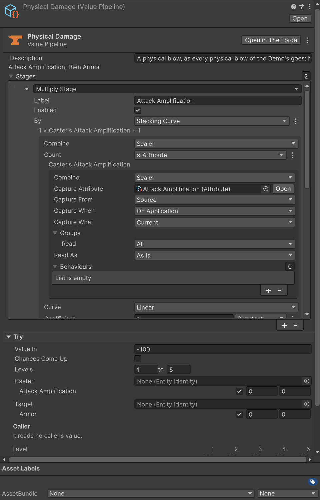

Value Pipelines
A Value Pipeline is an asset that takes a value as it lands, sends it through ordered stages, and gives what comes out.

Physical Damage's inspector.
An effect's impact names one as its calculation, as an Unreal effect names its execution calculation. Each hit of that impact goes through the pipeline's stages. So a project writes once how a hit's damage is worked out, and a new item that changes every hit is a stage, not an edit to each attack.
It's generic: the value is any number an impact lands with, a blow, a heal, a drain.
You create one in either of two ways:
- From Create > PlayForge > Value Pipeline.
- With New beside an impact's Pipeline field, which makes one named for the effect and uses it.
Once the field names one, Open shows it. A Crowd Control Rules or Effect Modifier field has the same two buttons.
In this guide
- Not a Scaler asset: A Value Pipeline and a Scaler asset both give numbers, but they work differently.
- When it runs: A pipeline runs for what an impact commits: an instant impact's hit, and each tick of a periodic one.
- Stages: A pipeline's stages take the value in order, each giving what goes on to the next.
- A typical damage pipeline: A typical damage pipeline has five stages
- The breakdown: An effect's spec keeps its last run as a Breakdown: the value in, each stage's before and after with its note, and the value out.
- Trying a pipeline: A Value Pipeline's inspector has a Try section under its stages.
- Built-in kinds: The kinds PlayForge ships for this guide's pickers, each with its menu and what it does, as its picker says.
In the API
The types of this guide's area: AbsorbStage, AbstractStopStage, AbstractValueStage, AddStage, BlockStage, ChanceStage, ClampStage, EStopImpacts, EvadeStage, ExecuteStage, MultiplyStage, ValueBreakdown, ValuePipeline, ValueRun, ValueStep.